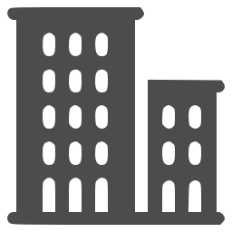

Аварійне відкриття дверей у Місто
Термінове відкриття дверей
Опинившись перед зачиненими дверима своєї квартири, офісу, гаража, складу, магазину чи особняка, і розуміючи, що ключі загублені, або замок вийшов з ладу та не відкривається, ви опиняєтесь в ситуації коли вам потрібно терміново розблокувати двері.
У таку мить важливо усвідомити, що ви не залишилися наодинці з цією проблемою:
Ми надаємо професійні послуги з відкриття дверей у Місті без пошкодження замків, спираючись на наш практичний досвід, що здобувався десятиліттями. Відкриваємо замки різних типів, котрі встановлені на дверях помешкань, котеджів та приміщень комерційного призначення.
Відкриваємо замки на дверях
Жилих приміщень
Комерційних приміщень
Допоміжних об'єктів
Спеціальних пристроях
Що таке аварійне відкриття замків
Аварійне відкривання дверей – це ряд технічних дій, що виконується фаховим спеціалістом, задача яких розблокувати замки клієнта без їх пошкодження або з мінімальними пошкодженнями секретної частини замка, запобігаючи знищенню дверної фурнітури, чи накладок дверного полотна.
Для успішного розблокування дверей, майстер повинен володіти ґрунтовними знання механічних особливостей величезної кількості моделей замків, представлених на сучасному ринку. Та мати досвід їх відкриття без пошкоджень спеціальними інструментами, який напрацьовується роками. А при несправності замка, вміти акуратно висвердлити його секретну частину щоб не пошкодити дверне полотно та замкову фурнітуру.
Під час аварійного відкривання дверей у Місті використовуються два підходи: відкриття замків без пошкоджень та з мінімальним пошкодженням кодової частини замка. Кожен з них має свої особливості та наслідки. Та застосовується в залежності від технічного стану кодових механізмів, кваліфікації майстра та побажань власника помешкання щодо їхнього вскриття.
Відкриття замків
не можите відкрити двері - дзвоніть нам:
+380 123 456 789Професійне відкриття замків у Miсті без пошкоджень. Працюємо з усіма типами дверних замків. Прибуваємо на виклик в будь-який район міста за 30 хвилин.
Відкриття замків без пошкоджень
При умові справності замка, переважна більшість - до 90% кодових механізмів, що використовуються на дверях приміщень, за допомогою спеціального інструменту можуть бути відчинені без пошкодження, з збереженням їхньої працездатності. Основні фактори успіху — це висока кваліфікація майстра та спец обладнання для вскриття.

Ключ від ваших дверей вставлений в замок одночасно виставляє всі кодові секрети в вірне положення. При його втраті чи поломці, фахівець з служби відкриття замків при допомозі спеціальних інструментів, імітує роботу ключа. Покладаючись на свій досвід і відчуття в пальцях, майстер виставляє по одному кожний кодовий елемент механізму у вірне кодове положення. Маніпулюючи внутрішніми секретами замка, спеціаліст відкриває замок без пошкодження. Залежно від типу, якості та складності замка, цей процес може тривати від кількох хвилин до годин.
Цей метод називають «маніпуляційним відкриттям замка», або методом «чистого відкриття», під час якого ніякі частини замка не пошкоджуються і після його розблокування спеціалістом, він і далі залишається в робочому стані і продовжує виконувати свої захисні функції.
Процес застосовується коли:
-
 ви втратили або забули ключі від вашого замка, та не маєте доступу до запасних;
ви втратили або забули ключі від вашого замка, та не маєте доступу до запасних;
-
двері випадково зачинилися (захлопнулись), а ключі залишилися в середині приміщення;
-
кодова нарізка ключа пошкодилась чи зламалась, і він не відкриває замок;
-
одна із кодових висот(крайня перша або остання) на сувальдному ключі стерся або зламався;
-
замок перестав відкриватися рідним ключем, але ознаки силового пошкодження відсутні;
-
ключ зламався частково чи повністю і застряг в ключовому отворі замка.
Прибувши на виклик, наш майстер насамперед прагне відкрити замок без пошкоджень, якщо це дозволяє ситуація. Для цього він використовує спеціалізований інструмент, підібраний саме під вашу модель кодового механізму.
Часто майстри відкривають замки клієнта методом маніпуляції за лічені хвилини. Варто розуміти, що за цими вміннями та швидкістю стоять сотні годин кропітких тренувань, що робить цю роботу висококваліфікованою та гідною відповідної оплати.
Відкриття дверного замка без пошкодження дозволяє його зберегти повністю функціональним, та уникнути додаткових витрат на купівлю нового замка та ремонт дверей і фурнітури.
Відкриття замка з пошкодженням
До свердління замка, як правило, вдаються у випадках, коли його механізм частково вийшов з ладу і відкрити його без пошкоджень за допомогою методів маніпуляції вже неможливо. В середині замка з’явилась несправність одної з ключових деталей — наприклад, зламалася пружина, з’явився знос у кулачку циліндра чи інша проблема, що унеможливлює його нормальну роботу з рідним ключем.
Деструктивні методи відкриття дверних замків передбачають ціленаправлене знищення їх кодових елементів шляхом пошкодження, для розблокування дверей.
Під час деструктивного відкривання замків може постраждати декоративна та захисна фурнітура, а в дверних накладках можуть залишитися отвори від свердління.
Свердління замків, це один із швидких способів відкрити двері, і коли йдеться про спасіння життя чи здоров’я людей (медична надзвичайна ситуація, дитина замкнена всередині). У таких випадках швидкість переважає над збереженням дверей та фурнітури.
Відкриття з пошкодженням застосовується у випадках коли:
-
існує безпосередня загроза життю та здоров’ю людей, і потрібно відкрити двері негайно;
-
ключ застряг в циліндровому механізмі замка і двері не відкриваються;
-
ключ крутиться в циліндровому механізмі але засов замка не зміщується в сторону відкриття;
-
замок вхідних дверей був закритий з середини на нічний засув;
-
замок не реагує на ключ або поворотну ручку, оскільки ригелі (засуви) повністю заклинили в дверній коробці;
-
циліндровий механізм частково знищений після спроби протиправного проникнення;
-
сторонні предмети (клей, сирники, цвяшки) в ключовому отворі циліндрового механізму, які неможливо витягти;
-
корпус замка був деформований при спробі зловмисниками віджати дверне полотно;
-
на сьогоднішній день не існує механічного рішення для відкриття замку без пошкодження його механізму;
У всіх цих випадках висвердлювання проводиться з максимальною точністю, щоб пошкодити лише необхідні елементи замка, уникаючи пошкодження дверного полотна або, в крайньому разі, мінімізуючи його.

Тільки після огляду замків майстром, та пояснення проблеми власник приміщення особисто надає дозвіл на відкриття дверей методом пошкодження механізмів.
Пам'ятайте, що деструктивне відкриття — це вимушений крок, який забезпечує відкриття заблокованих дверей, але майже завжди тягне за собою додаткові витрати на заміну замків, а в окремих випадках — і на відновлення зовнішнього вигляду дверного полотна.
Після того як двері було відчинено методом висвердлювання, замовнику доведеться зіткнутися з обов’язковими витратами на ремонт. Обсяг цих витрат залежить від типу замка та ступеня завданих ушкоджень.
Основний пріоритет нашої компанії — термінове відкриття замків у Місті без їх пошкодження. Наша задача — не просто розблокувати двері, а зберегти ваш замок у робочому стані. Що позбавляє вас в подальшому від додаткових, незапланованих витрат на ремонт дверей та купівлю нових запираючих механізмів.
Наші контакти
Сервіс Назва
Електронна пошта
Наша адреса
м.Назва вул.Назва Назва 555
Відкриття замків
Графік роботи
Пн-Пт вихідний Сб-Нд
Часи роботи
Щодня з 10:00 до 19:00